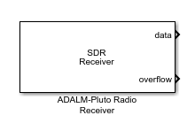
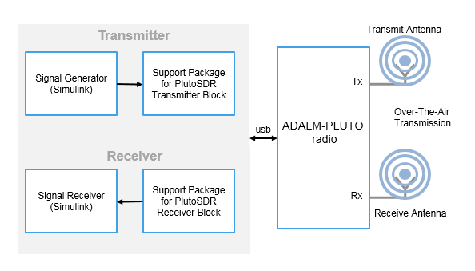

Pluto Receiver
Receive data from Analog Devices ADALM-PLUTO radio
- 
Libraries:
Communications Toolbox Support Package for ADALM-PLUTO Radio
Description
The Pluto Receiver block is a signal source that receives data from an Analog Devices® ADALM-PLUTO radio. This connection enables you to simulate and develop various software-defined radio applications.
The following diagram shows the interaction between Simulink®, the Pluto Receiver block, and the radio hardware.

If the host is not connected to radio hardware, you can still use this block to develop a model that propagates sample time and data type information. To propagate this information, update your diagram.
Channel Output
The ADALM-PLUTO radio has a single channel for receiving data and sending it to the Pluto Receiver block. The block outputs a column vector signal of fixed length. The first call to the block might contain transient values, which can result in packets containing undefined data.
Design Custom Filter
If the gain or bandwidth characteristics of the default filter does not satisfy the requirements for your application, use the ADI filter wizard to design a custom filter that meets your specific requirements.
By using the ADI filter wizard, you can change the default filter design applied to the filter chain in the Pluto Receiver block. To open the filter wizard, on the Advanced tab of the block, click Design custom filter. The wizard enables you to design a custom filter for the Analog Devices AD9361/AD9364 RF chip based on the Baseband sample rate (Hz) parameter. You can adjust and optimize the settings for calculating the analog filters, the interpolation and decimation filters, and the FIR coefficients. When you finish with the wizard, to apply the filter settings, click Apply on the block.
The ADI filter wizard requires the following MathWorks® products:
MATLAB®
Signal Processing Toolbox™
DSP System Toolbox™
For instructions on operating the ADI filter wizard, visit the Analog Devices website at MATLAB Filter Design Wizard for AD9361.
For more information, see Baseband Sampling Rate and Filter Chains.
Examples


Ports
Input
Output
Parameters
Version History
Introduced in R2017a